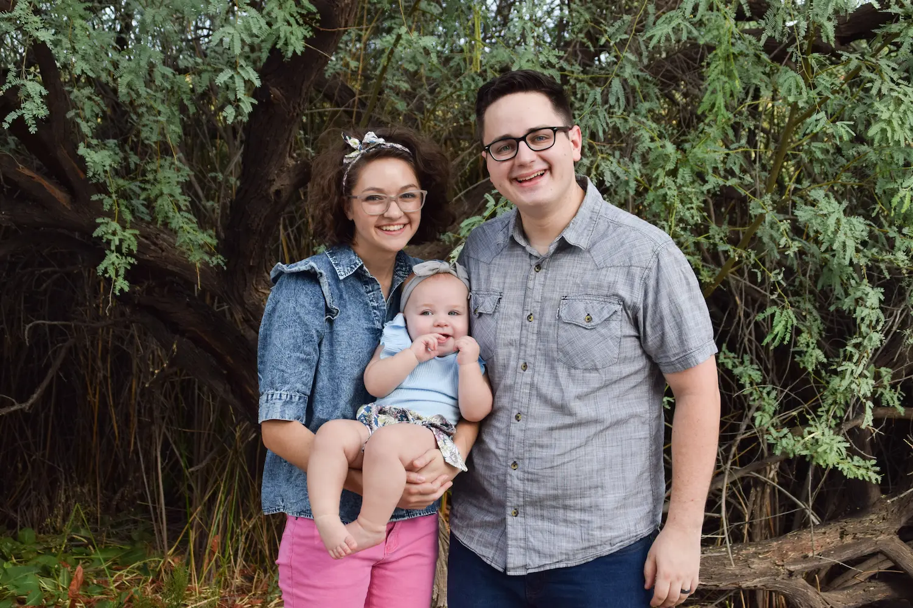

Jace Bright | WDD 130
Hi y'all! My name is Jace Bright and I am from Queen Creek, Arizona. I recently moved to Fort Worth Texas with my family and we are enjoying it! A litle introduction about myself is that I love board games! The classics are good, and I am always up for modern games as well. My wife and I have a collection of about 125 board games and growing. My wife, Bethany, is an author of fantasy books and I enjoy supporting her as I can. I have a beautiful daughter named Ro and she is absolutely amazing. Me and my family love spending all the time we can together around our busy lives and I am looking forward to continuing my education through this class!